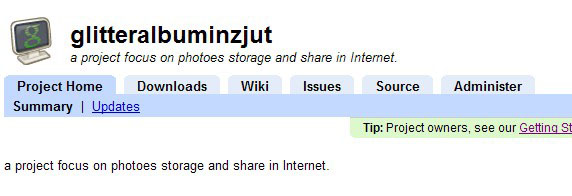
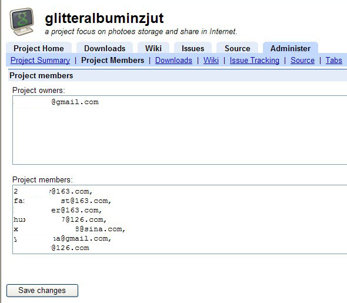
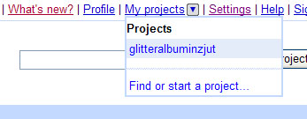
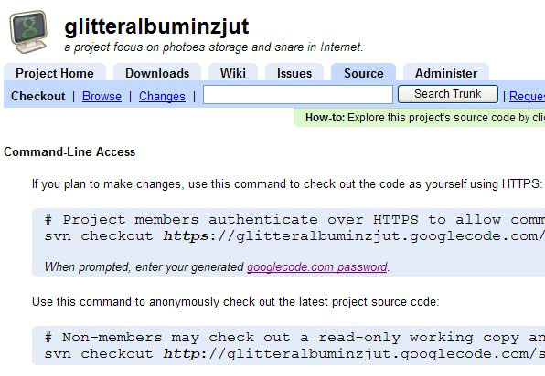

最近因为项目进行到开发阶段，我们的八人小组需要对开发代码进行版本控制。而在我们个人的PC上搭建一个SVN服务器显得有点困难。经人提点，我们选择用GoogleCode做我们的SVN服务器托管我们的项目。
首先要确保所有项目组成员都有一个google账号。顺便提一句，google账号真是好东西。Google提供了很多优质且免费的服务，个人当前在用的有cal、reader、gmail、文档，desktop、Picasa等服务，大吃免费午餐。用你的账户登录并转到http://code.google.com，从左侧的菜单选择项目托管，新建一个项目，填写了一些诸如项目名，项目描述等关键信息后就可进入项目管理页面。如下图

这么简单，就相当于建立了一个SVN服务器，接下来只要进行简单的配置就能进行版本控制的管理了。选择上图的Administer标签，并选择Project Members子菜单，看到如图界面，把项目组成员的google账号填写到第二个文本框中。点击Save changes保存配置。

现在所有被加入该项目的成员都可以从前面相似的步骤从code.google.com->项目托管->右上角个人信息菜单的My Projects。可以发现我们的项目已经在里面了。

点击后回到是到第一张图的界面，这时，项目组成员要获得项目地址、用户名和密码以登录SVN客户端。点击Source标签。
这里显示的有两个蓝底框，其中上面一个安全连接的(https)是要用用户名和密码登陆的，下面一个http的是只读连接。记录上面的安全链接地址，以及行末的用户名，然后，下一行，有个googlecode.com password连接，点开，里面就是在SVN客户端使用的密码。

好了，得到了需要的东西，我们可以暂时遗弃google一段时间了。
SVN客户端被广泛使用的是开源软件tortoiseSVN，小乌龟。哈。从官网上下载http://tortoisesvn.net/downloads。安装，重启。
然后在本地的一个文件夹中，右键选择checkout，第一次时会要你输入服务器地址、用户名、密码。把刚才得到的数据输入。建议勾选记住用户名和密码一劳永逸。登录成功后，这就是一个和SVN服务器直通的共享文件夹了——当然，比共享更强大，提供了事务、日志等功能。简单的，右键菜单里选择update更新你的本地文件，做你的工作，然后commit到服务器吧！
就像看天书一样，呵呵
[回复]